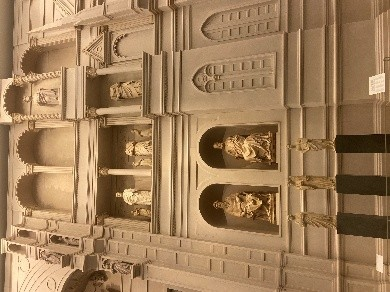
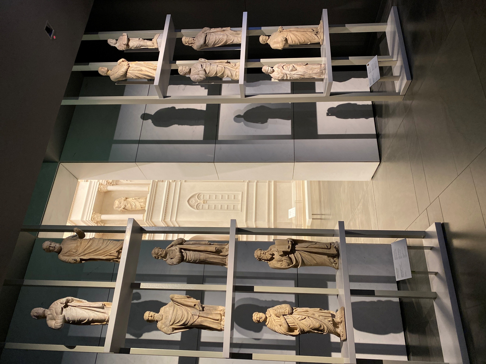
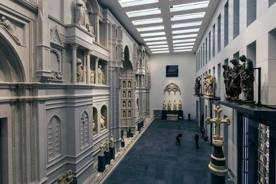
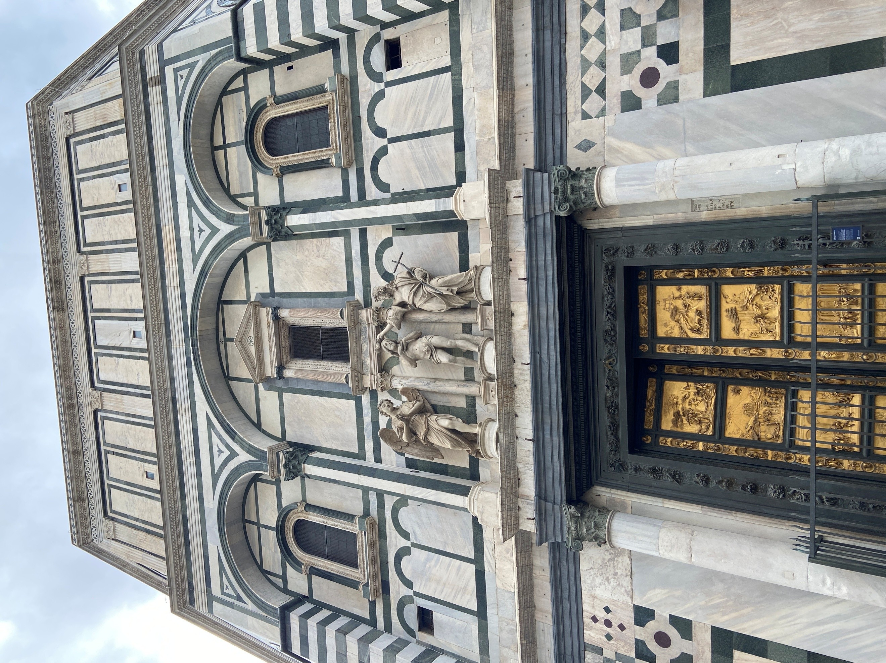

歷史之終結？—從義大利文化遺產「異地存真原位再現」永續模式對照傳統建築工藝保存的當前危機
陳建仲
關鍵字：傳統建築工藝；異地保存；移地保存；博物館；保存科學。
摘 要
「異地存真原位再現(Ex-Situ Conservation with In-Situ Replication)」模式是義大利保存文化遺產常見的永續性策略，目的是將那些曝露在外年代悠久的珍貴文物移至博物館保存、修復與展示，原位再以高精度的複製品取代之，維持外貌完整性。這種方法在全球各地的遺產保護中受到廣泛地應用，知名者例如雅典厄瑞克忒翁神殿女像柱(The Caryatids of the Erechtheion)、奈良高松塚古墳飛鳥美人壁畫、柬埔寨吳哥窟巴戎寺(Bayon)壁面浮雕等；國內則實例不多，作法亦失之簡陋。面臨全球蔓延的空氣污染與極端氣候、地震或是人為破壞等處境下，此一折衷之道不失為一舉多得的及時解方。相較於世界各國積極設法維護文化遺產、阻絕損壞、賡續歷史的同時；臺灣文化資產中占比相當大的漢式傳統建築及其木雕、彩繪等裝飾工藝，卻是持續著難以逆轉的慢性傷害，遍及各地。近期之國定古蹟鹿港天后宮以及龍山寺可謂時下瀕危名單中最為迫切者，前者百年以來未見修復之事而搖搖欲墜，後者建築彩繪斑駁脫落的狀態看來也有20年之久。針對當前難題，本文借道義大利異地保存理論與經驗之研究取徑，對照國內古蹟裝飾工藝的損害現況，對症下藥，研提續命良方。漢式傳統建築工藝的保存及其歷史是否將要終結在我們這一代手上？端看國人是否能正視困境，展現解除危機的智慧與決心。
寺院與宮廟是臺灣文化資產類別中占比相當大的一部份，其民俗活動也跟常民社會息息相關。宗教建築內外必然會有許多的裝飾工藝品，舉世皆然。臺灣的漢式廟宇建築上，隨處可見剪黏、泥塑、木雕、石雕或是彩繪等裝飾工藝，不但具有宗教色彩，也是反映臺灣民間藝術的文化資產。然而，這些裝飾工藝容易遭受天候因素的破壞，若是缺乏積極的保存維護工作，珍貴的文化資產便極易流失。如何永續保存文化遺產是全球普遍的課題，筆者觀察國際保存經驗，發現採取「移地保存、原位複製(Ex-Situ Conservation with In-Situ Replication)」的模式已是通行的做法。這是一種將原本文物「移地保存」後，原位再以真假難辨的「複製品」取代的折衷策略，既可避免重要文物日曬雨淋的持續性危害，亦可維持建築外觀的完整性，一舉兩得。筆者認為，對於各地文化資產中已經無法修復或是亟待入館保存的傳統建築裝飾工藝，宜引進前揭國際通行的做法來解除當前的保存危機。「其中仍保存於寺廟屋頂上的，必要時應移置於文物館中，以免將來遭毀。」因此，本文藉由義大利的保存經驗來說明這種移地保存模式對於維護臺灣文化資產的重要性與必要性。
本文的研究方法主要有二，其一，義大利佛羅倫斯主教座堂博物館、威尼斯聖馬可博物館以及羅馬卡比托利博物館等移地保存博物館的個案經驗觀察。其二，臺灣文化資產個案田野調查工作，包括臺北保安宮，彰化鹿港龍山寺、鹿港天后宮，臺南市學甲慈濟宮與葉王交趾陶文物館、佳里金唐殿、佳里震興宮等。
首先，義大利文化遺產保存學者切薩雷‧布蘭迪(Cesare Brandi)的修復理論(Teoria del Restauro)認為，基於「潛在一體性(Potential Unity)」與「可逆性(Reversibility)」兩個原則，古建築上的歷史文物在適當的條件下，是可以移至博物館保存。其次，1964年威尼斯憲章第8條：「做為古蹟整體一部分的雕塑、繪畫或裝飾品，只有在無其他保存方法情況下，方可進行移動。」因此，將損害情況嚴重而無法原地保存的戶外歷史文物移至室內保存，是一種被國際認可的做法。第三，1994年奈良會議曾解釋：「真實性（Authenticity）本身不是一種固定不變的價值基準，真實性也不僅僅涉及材料的真實性相關。」奈良真實性文件擴大了「真實性」的定義，承認形式、設計和傳統工藝等也是真實性的一環，為基於傳統工藝而完成的「高精度複製品」提供了理論面支持。
義大利採取博物館經營方式來維護移地保存的重要文物，原位再以高仿真的複製品取代之，不露痕跡，保持古建築外觀完整性。臺灣方面，李乾朗曾有類似的呼籲，提出「台灣建築博物館設立之構想」，除此之外，至今實務上尚無同樣案例，類似的取徑則是少數宮廟會將損壞的建築裝飾物件或是宗教文物保存展示於室內，但為數不多且做法簡易、缺乏吸引力。知名者例如：「臺北保安宮」、「雲林北港朝天宮」、臺南學甲慈濟宮之「葉王交趾陶文物館」。總之，上述這些個案的做法，實際上只是存放跟宮廟相關的一些歷史文物，並非一處專為保存、修復以及詮釋(Interpretation)傳統建築裝飾工藝而量身打造的場館。特別值得一提的是，1987年高雄茄萣鄉「萬福宮」面臨拆舊蓋新之際，國立自然科學博物館漢寶德館長有先見之明，特將其拜殿與正殿的屋架木結構及其木雕工藝，完整運至館內保存展示，至今仍為孤例。
傳統建築工藝作品可見於剪黏、泥塑、交趾陶、木雕、石雕、磚雕以及彩繪等，現況損害的部份則以容易受到日照、雨淋、溫差持續性破壞的剪黏、泥塑與彩繪最為嚴重，木雕次之。本文以慢性損壞多年的國定古蹟彰化鹿港「龍山寺」與「天后宮」，本土交趾陶名匠葉王、「潮州派剪黏開山祖師」何金龍作品集中地的市定古蹟臺南佳里「金唐殿」與「震興宮」以及「學甲慈濟宮」為例，揭露臺灣各地傳統建築工藝的損壞情況已不容忽視，由此可見一斑。
佛羅倫斯主教座堂博物館(Museo dell'Opera del Duomo)是全球實踐「移地保存」與「原位複製」永續模式的著名典範之一。這座博物館的誕生來自於聖母百花大教堂一段數百年的歷史背景所促成。大教堂正立面原本是由迪‧坎比奧(Arnolfo di Cambio)在13世紀時所設計的，但只完成了下半部。16世紀時，佛羅倫斯掌權的麥迪奇家族大公法蘭西斯科一世(Francesco I de' Medici)認為原始設計已經是「過時的哥德式美學」，無法反映文藝復興發源地的進步性形象，便下令將教堂的舊立面拆除，重新設計。不幸的是，因為這位大公的驟逝以及政治上的變化，立面重建案只能胎死腹中。300年後，1887年才完成大教堂立面的重建，成為今日面貌，至於從教堂牆上被拆除下來的數十件雕像則是散落四方。1891年，大教堂管理局成立主教座堂博物館後，逐漸尋回那些流落在外的雕像。2015年，博物館擴建後以全新的「天堂之庭」展場設計，將那些歷史文物再現到1587年拆除前的位置上。此外，教堂外牆上明顯損壞的19世紀雕像、喬托鐘樓的雕刻以及著名的「天堂之門」，也陸續移入博物館保存（圖1），原位同時以高精度複製品替代（圖2）。




特別的是，原作移入博物館保存後，並非讓它們一如往常排隊般地站在展示櫃裡迎向世人。博物館在2015 年大規模擴建時，另闢蹊徑，依據歷史文獻以及坎比奧原始的設計圖面，特別規劃「天堂之庭（Sala del Paradiso）」的巨型展示廳（圖3），以原尺寸等比例複製整個1587年的教堂立面，再將那些大理石雕像安放到原本的所在位置（圖4）。這樣的創新設計手法，別開生面，不但還原了文物的空間脈絡，再現歷史情境，宗教人像躍然而生；也以當代思維來詮釋文化遺產的保存方式及價值性，不再只從考古學的刻板視角，尋求文化遺產的保存與展示。
「移地保存，原位複製」的保存策略已是一種受到全球普遍認可的文化遺產永續經營模式。這種做法具有三個優點，其一是「文物空間脈絡的完整再現」，文物去脈絡化是這個模式經常招致的批評，此舉可避免移地保存的文物脫離了相對位置的關係或是失去脈絡感；其二是「歷史真實與想像的平衡」，基於研究考證而還原的中世紀教堂立面，不再只是自行想像的畫面，文化遺產跨越時空再生產而有了新的詮釋，在真實性與想像力之間尋得一個當代的平衡點；其三是「保存維護的動態永續性」，在大教堂附屬文物修復工坊(Bottega di Restauro)與博物館專業的合作之下，大教堂與喬托鐘塔的外牆雕像仍持續執行「異地保存與複製品替代」的維護模式，保存工作呈現動態的永續性。
義大利佛羅倫斯主教座堂博物館這種保存文化遺產的折衷做法，道理淺顯易懂，執行層面亦不困難。例如，2026年7月26日甫登錄為世界文化遺產的日本奈良「飛鳥與藤原的宮都」中著名的「飛鳥美人」古墳壁畫，早年便已推動「異地保存，原地複製」的因應模式。反觀臺灣，從筆者田野調查的實際觀察中，僅是本文所舉代表案例的彰化鹿港天后宮與龍山寺，臺南市的學甲慈濟宮、佳里金唐殿與震興宮等，那些已屬珍貴罕見的剪黏、交趾陶、木雕或是彩繪等建築裝飾工藝的現況，不是缺乏設計轉譯與詮釋層次的永續性思維，就是早已脫落損害嚴重。因此，取道義大利文化遺產永續保存的創新模式，建立一處國家級漢式傳統建築裝飾工藝保存博物館，實屬刻不容緩之事。
本文立論基於以下五點具體原因，興建這一座博物館，不但有來自現實上勢在必行的當前危機考量；長遠而言，更能為國家社會帶來持續性的實質助益。其一，「急迫性」，各地傳統建築工藝從保存環境、文物修復或是技藝傳承等環節的高度脫勾與斷層現實，簡直是路人皆知，早已不是新聞。其二，「可行性」，近20年來，從文化部到地方政府，經常浮編數十億預算，競相舉辦國際建築競圖以爭取興建時髦的博物館或美術館，最終典藏空洞，效益不彰，毀譽參半；既然如此，比照辦理，為臺灣本土文化資產興建一座保存博物館，實務上當然可行。其三，「正當性」，保存文化資產不但彰顯臺灣文化主體性，亦響應聯合國永續發展目標(SDGs)。其四，「教育性」，仿效義大利保存經驗，在長期實務工作磨練之下，可循序漸進地培育傳統建築工藝的修復技師以及工藝匠師，雙管齊下。其五，創造「經濟外部性效益」，一座獨一無二的文化遺產保存與詮釋博物館，令人充滿好奇心與想像空間，增加地方文化亮點之餘，人潮帶來金流，亦可促進在地觀光發展，一舉多得。
本文從代表個案的田野調查研究中發現，臺灣的漢式傳統建築裝飾工藝，除了現況損壞普遍以及保存環境不良之外，當務之急是興建一座移地保存博物館，建立文化資產保存的永續性模式，阻斷危機，亡羊補牢。其次，「異地保存，原址複製」的文化遺產保存方式早已是通行於世界各國的折衷之道。筆者走訪義大利佛羅倫斯、威尼斯以及羅馬等知名移地保存博物館，觀察其展示規劃與設計的做法之後，發現臺灣不但缺乏這種保存模式，實務上類似的文物保存館也是做法簡陋而消極，未能發揮想像力，融入當代的新詮釋，塑造價值感。因此，本文期盼能以義大利「異地存真原位再現」的永續保存模式，為國內指引一條活絡文化資產保存的新道路，賡續工藝命脈；同時，提出五點立論來支持說明儘速興建一座國家級漢式傳統建築裝飾工藝保存博物館的重要性。
李乾朗(1999)。台灣傳統建築匠藝二輯。臺北市：燕樓古建築出版社。
李乾朗(2006)。臺灣傳統建築匠藝第九輯。臺北市：燕樓古建築出版社。
陸地編譯(2016)。修復理論。(原作者：Cesare Brandi)。上海：同濟大學出版社。(原著書名：Teoria del Restauro)。
1964年威尼斯憲章。
1994年奈良真實性文件。
註釋